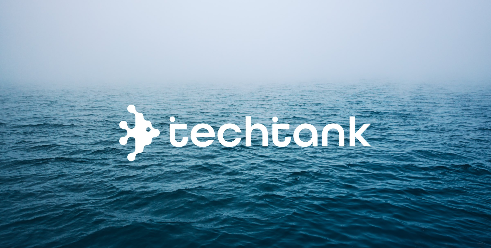
techtank [Playful to Professional]
- Date
- 2026
- Location
- Toronto
- Services
- Brand Identity
Design Systems
Graphic Design - Collaborator
- Victoria Sze
The Brief
Overview
TechTank is a volunteer-run nonprofit in Toronto hosting inclusive, in-person tech events and build sessions. Their "no-gatekeeping" mission aims to create a welcoming space for all skill levels, featuring dedicated programming for women, gender-diverse, and queer individuals to ensure genuine inclusivity.
Challenge
TechTank needed a brand refresh to build credibility with sponsors while remaining warm and community-driven. The existing identity—featuring a wave-styled font and a bright, cartoonish fish mascot—felt slightly immature, resembling a kids' program. The challenge was to retain the recognized equity of their fish icon and teal/yellow palette while designing a sophisticated, scalable system that works across everything from a 16px favicon to oversized merchandise.
Solution
I evolved the identity by replacing the novelty lettering with a clean, lowercase sans-serif wordmark, establishing a more grounded and professional tech aesthetic. I refined the fish icon by keeping its sharp silhouette but stripping away the cartoonish face, resulting in a confident, technical mark. The new system scales perfectly across digital and physical touchpoints, giving the brand a polished look that appeals to funders without losing its grassroots character.
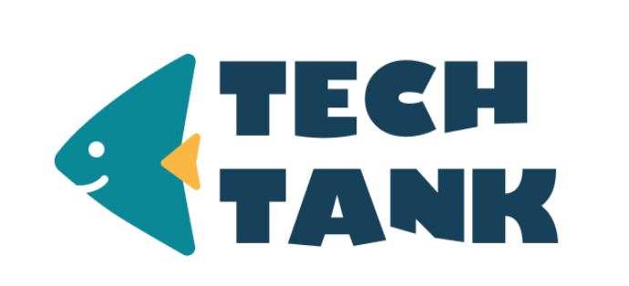
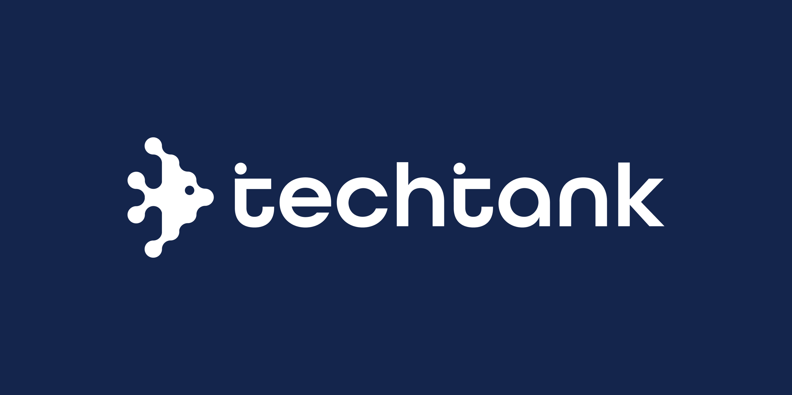
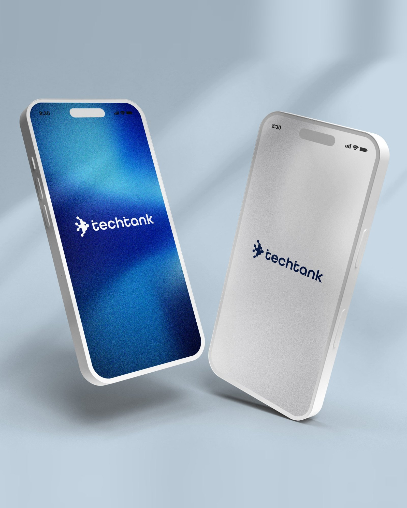
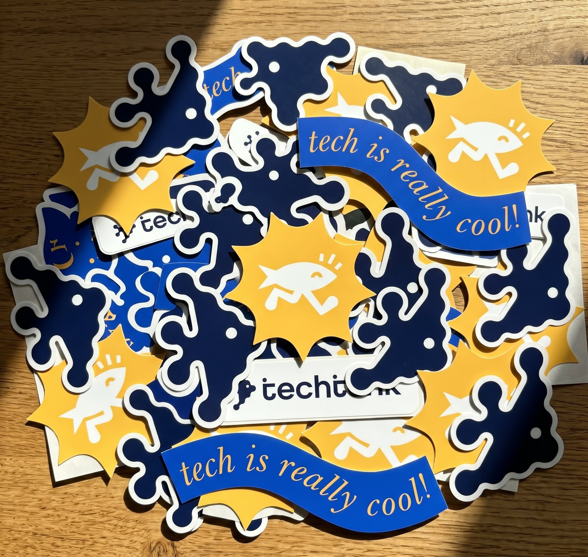
Design Intent
Retaining the angel fish silhouette stays true to TechTank’s grassroots origins, preserving the community’s established recognition. For the new wordmark, the geometric letterforms were intentionally selected because they subtly mimic the posture of people seated at a table, building and collaborating together.
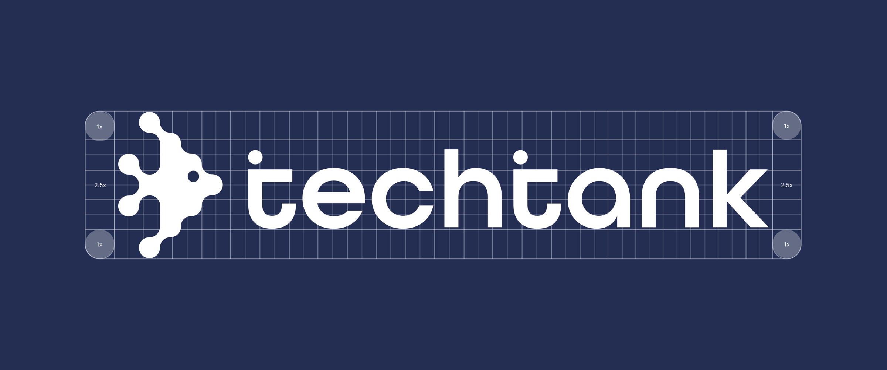
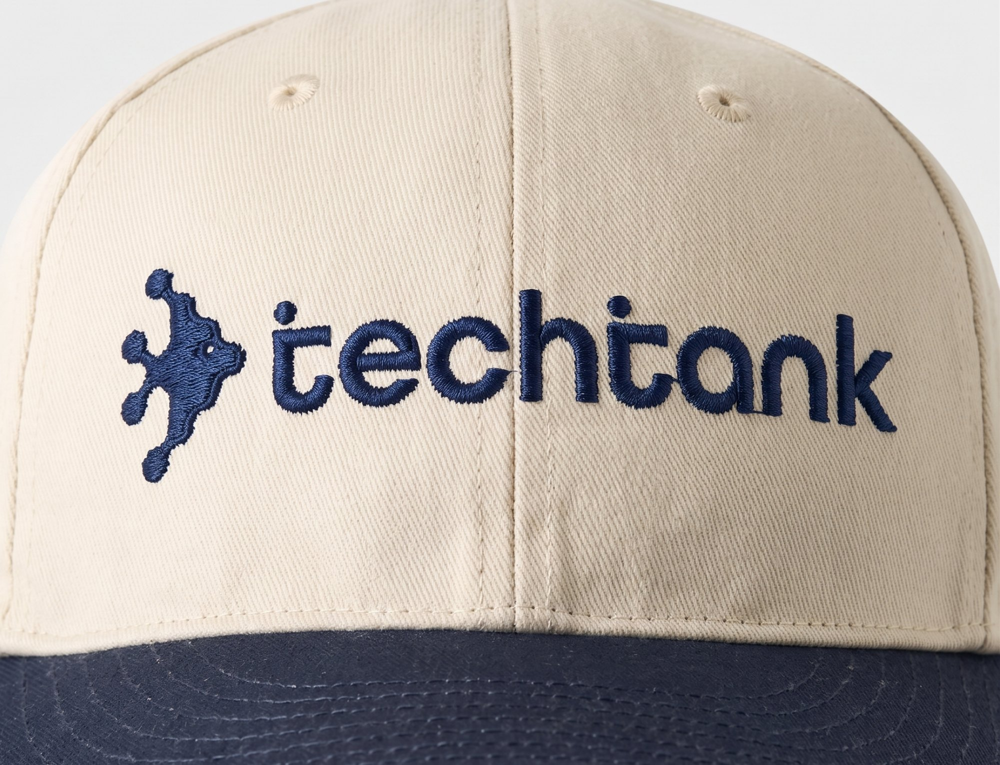
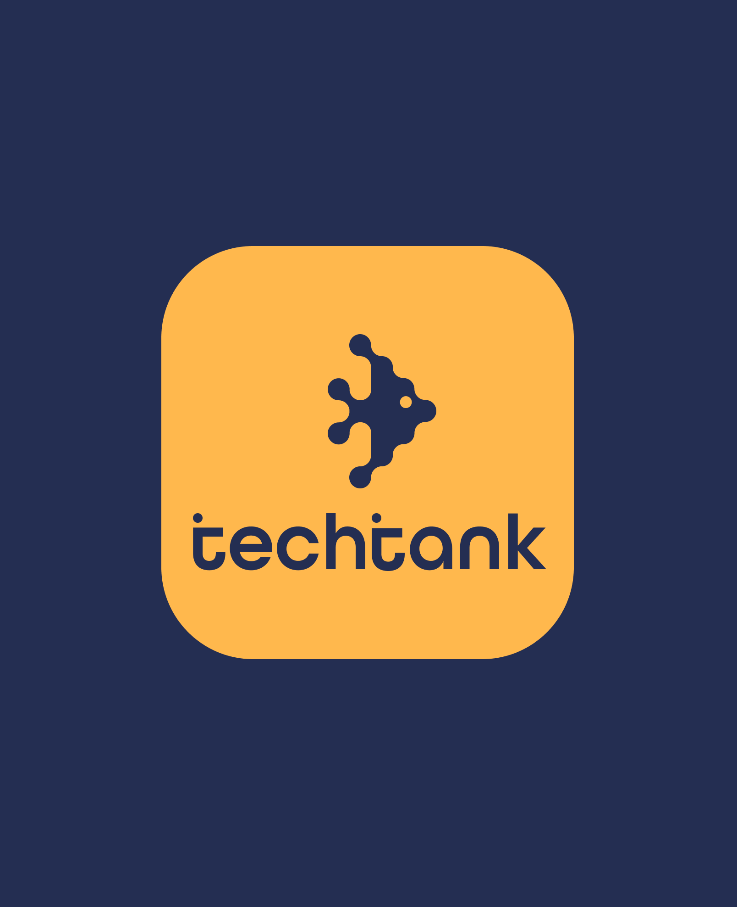
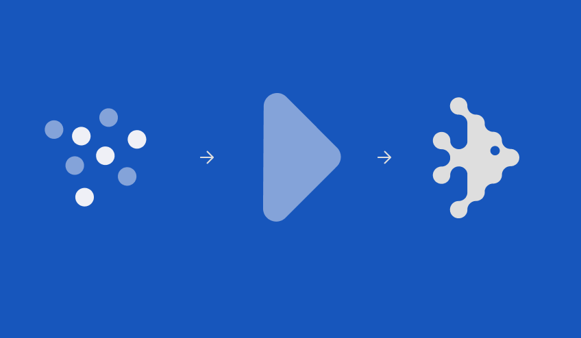
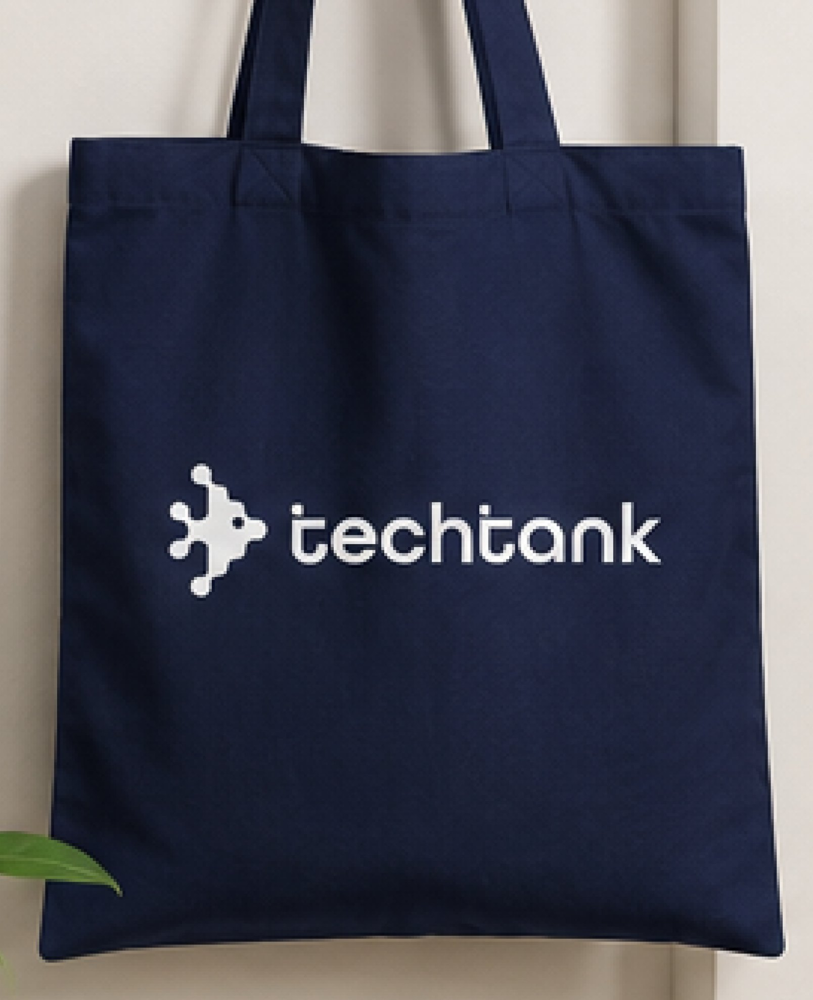
Intentional Evolution
We kept the iconic angel fish to honor TechTank’s roots and maintain brand equity. The shift in typography introduces a hidden layer of meaning: the rounded, lowercase letterforms subtly mirror the posture of individuals sitting side-by-side, actively working and creating as a community.
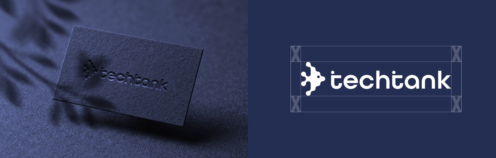
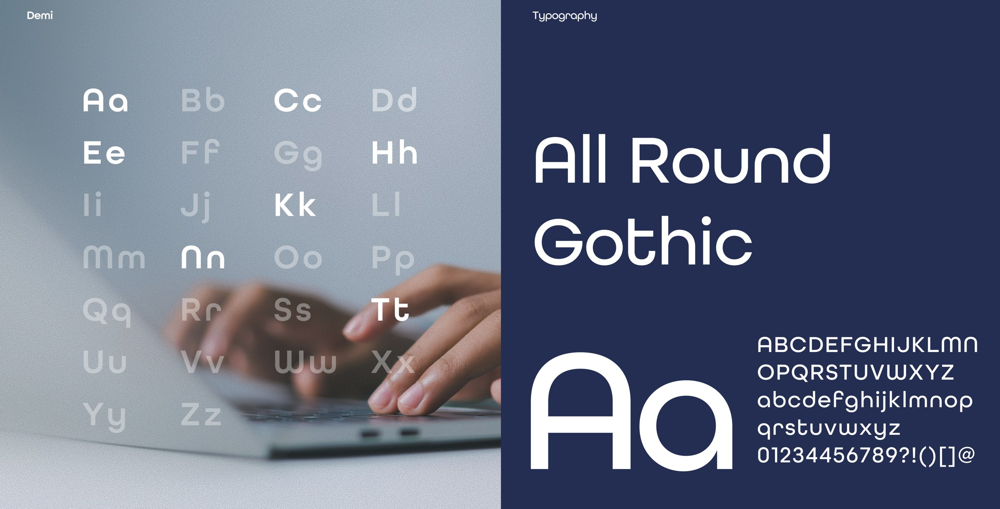
Form & Community
The evolved angel fish symbol stays true to the organization’s origins while shedding its juvenile aesthetic. Complementing this, the new typeface was chosen for its structural warmth—the letterforms are designed to resemble people seated together at a workbench, reflecting the core mission of collaborative building.
Colour palette
- #FFFFFFAbsolute White
- #242E52Navy Blue
- #1756BCSapphire Blue
- #F8BE41Mango
- #000000True Black
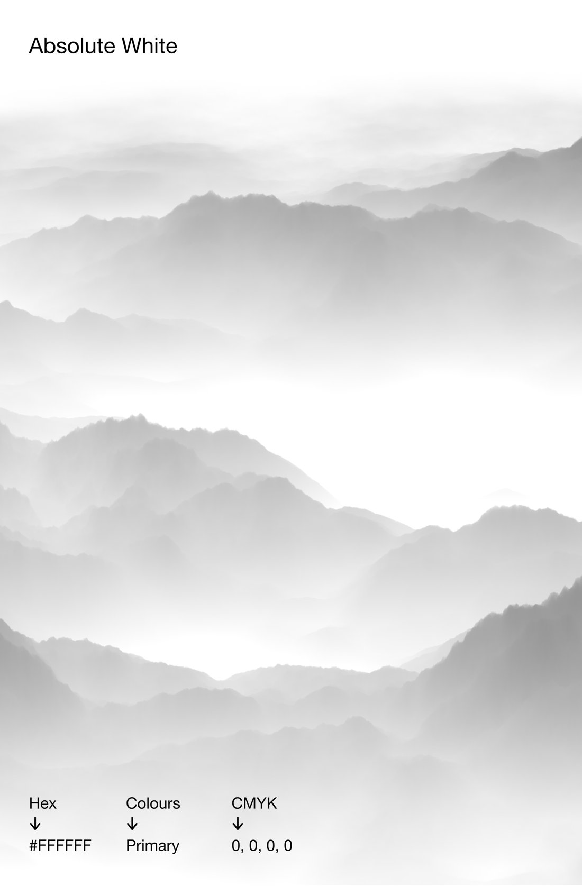
Making tech thrive in Toronto all year round.